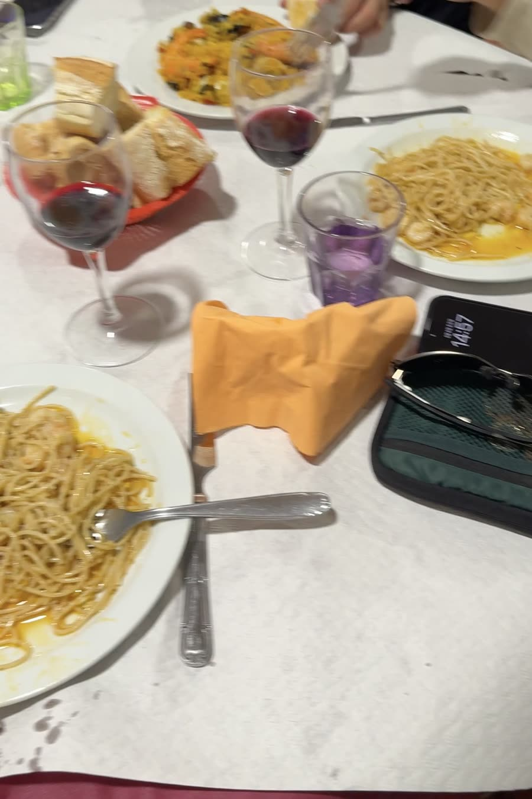
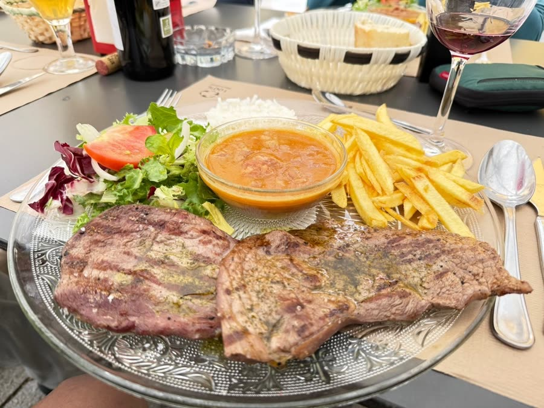
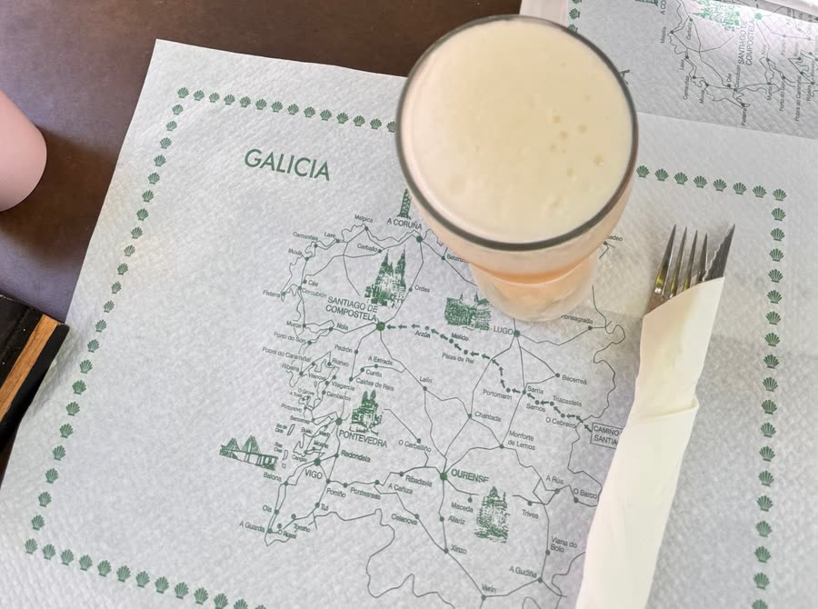
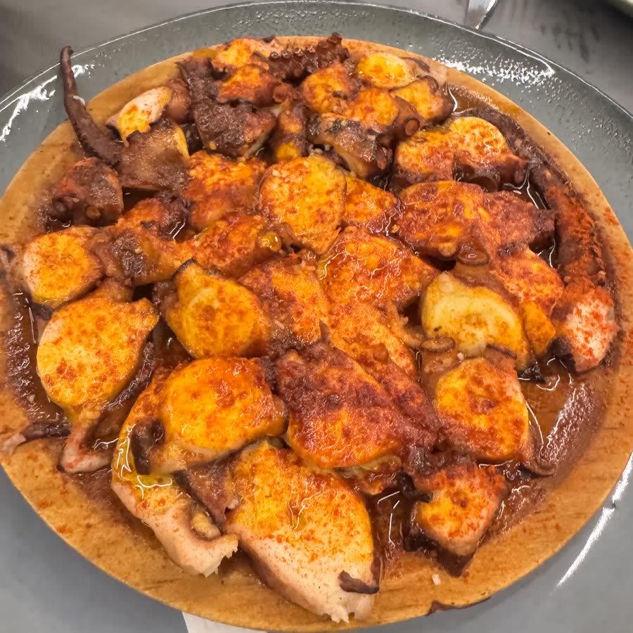
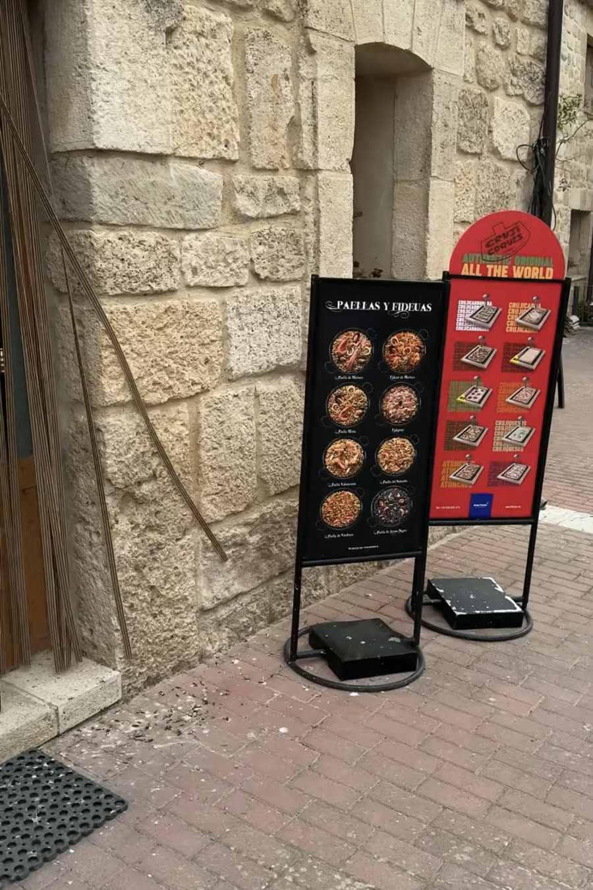
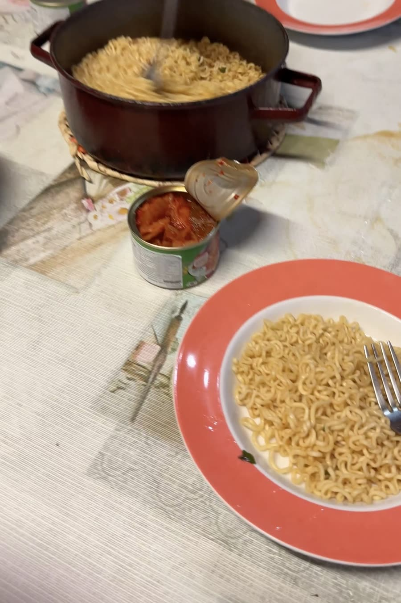

순례자의 한끼한밤
순례자의 한끼한밤
순례길 32일 동안 매일 스페인 음식을 먹었다. 그런데 돌아와서 제일 먼저 생각난 건, 스페인 음식이 아니었다.
오늘은 산티아고 순례길에서 먹은 것들, 그리고 제일 그리웠던 한 끼 이야기다. 같은 이야기를 4분짜리 영상으로도 만들었다.
순례길에서는 하루에 25km쯤 걷는다. 그렇게 걷고 나면 질문은 딱 하나 남는다. 오늘 저녁은 뭘 먹지?
마을 식당에는 대부분 순례자 메뉴가 있다. 첫 접시와 두 번째 접시, 디저트, 그리고 빵과 와인까지 나온다. 값은 보통 10유로에서 15유로 사이였다. 처음 보는 사람들과 한 식탁에 앉아 와인을 따르다 보면 어느새 이야기가 시작된다.

순례자 메뉴 한 끼 값의 위쪽 끝.
첫 접시, 두 번째 접시, 디저트, 빵과 와인까지.
메세타라는 끝없는 밀밭 구간에 들어서면, 나는 거의 매일 같은 메뉴를 시켰다. 이베리코 돼지 구이다. 스페인 흑돼지를 스테이크처럼 두툼하게 구워 주는데, 지친 다리에 힘이 들어가는 맛이었다.

하루도 빠지지 않은 게 하나 더 있다. 레몬 맥주, 클라라. 맥주에 레몬 탄산을 섞은 음료인데 하루에 세 잔에서 다섯 잔은 마셨다. 한 잔에 보통 3유로, 비싼 곳은 5유로쯤. 그중 최고는 산티아고를 60km쯤 남긴 갈리시아의 작은 카페였다. 잔까지 꽁꽁 얼려서 내주는데, 그 한 모금은 아직도 잊히지 않는다.

갈리시아에 들어서면 음식 맛이 확 달라진다. 바다가 가까워서 해산물이 정말 맛있다. 대표 음식은 뽈뽀, 삶은 문어다. 가위로 숭덩숭덩 잘라서 올리브유와 굵은 소금, 파프리카 가루만 뿌려 준다. 바삭한 오징어 튀김도 빼놓을 수 없다.

그럼 스페인의 대표 음식, 파에야는? 열흘째 처음 먹은 파에야는 솔직히 평범했다. 세 번째 먹었을 때 처음으로 "오, 먹을 만하다"는 말이 나왔다.
그런데 걷다 보니 이상한 게 눈에 들어왔다. 마을마다 가게 앞에 서 있는 파에야 간판이 거의 똑같이 생긴 것이다. 같은 냄비 사진에 같은 메뉴 이름, 나오는 팬도 비슷했다. 내가 받은 느낌은 포장된 걸 뜯어서 내주는 것 같았다. 나중에 찾아보니 그런 가게도 꽤 있다고 한다.

원래 파에야는 발렌시아 음식이다. 제대로 하는 집은 주문을 받고 나서 쌀을 익히기 시작해서, 20분 넘게 기다려야 하는 경우가 많다고 한다. 내가 먹은 파에야가 평범했던 이유도 어쩌면 거기 있었을지 모른다.
맛있는 것도, 아쉬운 것도 많았지만, 걷다 보면 문득 생각나는 맛이 있었다. 열여드레째, 작은 마을 마켓 선반에서 신라면과 김치를 발견했다. 그날 저녁 냄비째 끓인 라면 국물 한 숟가락에, 멀리 있는 집에 온 것 같았다.

스물사흘째에는 비바람을 맞으며 해발 1,400m 산마을까지 올라갔다. 그런데 그날 묵은 알베르게 저녁 메뉴에 한국 라면과 김치, 그리고 밥이 있었다. 방의 절반이 한국 사람이었는데, 다 같이 둘러앉아 먹은 그 라면이 순례길에서 제일 맛있었다.
영상 챕터
- 0:00
순례길 32일, 제일 그리웠던 한 끼
- 0:24
순례자 메뉴 (10~15유로)
- 0:42
메세타의 이베리코 구이
- 0:56
하루 3~5잔, 레몬 맥주 클라라
- 1:21
갈리시아 해산물: 뽈뽀·오징어 튀김
- 1:40
파에야 간판의 비밀
- 2:26
신라면과 김치, 산꼭대기 알베르게의 라면
- 3:07
포르투에서의 약속
32일을 걷고 알게 됐다. 하루 종일 걸은 사람에게 필요한 건 따뜻한 한 끼와 편한 하룻밤이라는 걸. 그래서 약속을 하나 했다. 언젠가 포르투에서, 길 위의 순례자에게 한 끼와 하룻밤을 내어 드리겠다고. 그 상에는 김밥과 매콤한 쭈꾸미볶음을 먼저 올리고 싶다.
For pilgrims passing by
I walked the Camino Francés for 32 days and ate Spanish food every day: pilgrim menus for 10 to 15 euros, Iberian pork on the Meseta, lemon beer (clara) every afternoon, and octopus in Galicia. But what I missed most was a bowl of Korean ramen, which I found at a mountain albergue 1,400 m up.
🕯️ 오늘 밤 이야기는 여기까지.
여러분이 여행 중에 제일 그리웠던 한국 음식은 무엇이었나요?